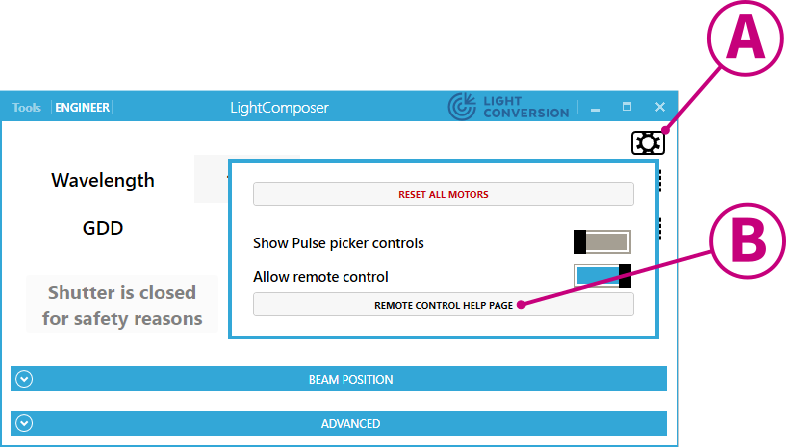

Download: LightComposer, WinTopas4.
Note: the following information applies to LightComposer v1.7.0 and above.
Introduction
LightComposer is an end-user-oriented application for controlling OPA-based laser sources produced by Light Conversion. Interactive laser system control via the LightComposer GUI is described in the User Manual of a particular system, this document covers local and remote control via the LightComposer API.
LightComposer provides a GUI for interactive laser system control and an API service for remote control, automation and advanced applications. LightComposer operates on top of Topas4, whose server component carries out the actual hardware control. Depending on system configuration, one or more Topas4 server instances are used for hardware control and all must be running for the laser system to function properly. Running the LightComposer application should start all the necessary server instances. From the API user standpoint, communication occurs between the client application and the LightComposer app, all the necessary backend operations are handled by LightComposer.
API Control Basics
API control is provided via a REST interface. API calls between the client and the LightComposer application are sessionless, i.e., there are no handles, control locks or opening/closing of devices. Multiple clients can use the REST service at the same time, and the LightComposer GUI can be used at the same time as well.
The REST interface can be accessed from the LightComposer GUI by opening the settings menu (A) and clicking on the Remote Control Help Page button (B).
The remote application sends API commands as HTTP REST requests to the LightComposer application. A response is sent back to the remote application as part of an HTTP exchange. The contents of the REST messages are serialized using JSON.
Since REST commands are sessionless they are non-blocking. As a result, commands that take some time to finish (e.g. set wavelength, set GDD, open shutter) are only initiated by the REST command. You can track the progress of these actions by repeatedly polling their status.
Detailed Description of API Commands
Set wavelength and GDD, open and close shutters, and get the current device status.
Configure automated output beam steering or perform direct beam steering by controlling the mirror positions directly.
Turn the pump laser on and off, set pulse picker and check the laser state.
Examples
API use expamples in several languages will be provided at a later time (the planned relese is in August 2021). Contact support@lightcon.com if you need assistance before then.
You can test whether the API calls in your application
are correct without a physical device.
WinTopas4 supports virtual/demo devices, which accept GUI and
REST commands just as real devices would, with the following
limitations:
- Interlock can’t be activated
- Beam steering will not be available
To start a virtual device, launch WinTopas4, click Tools>Launch Demo Device and select 'Cronus-3P'.
Postman
We recommend Postman for quick and simple API testing as well as to check whether the client computer can communicate with the host running the LightComposer REST service at all. A Postman collection is provided for this purpose.

Make sure to set the correct URL for your device after you import the collection. A typical URL is: http://127.0.0.1:35120/CTP21456/v0/, where CTP21456 is the serial number of your device, 127.0.0.1 is the IP address (localhost, in this case) and 35120 is the REST service port.
Postman should be your first troubelshooting step. We can only offer limited support if an API command is not working in a particular user application but the corresponding request in Postman returns the expected result. We will ask you to provide an output log from Postman when you inquire for assistance, so it is best to have it before reaching out.